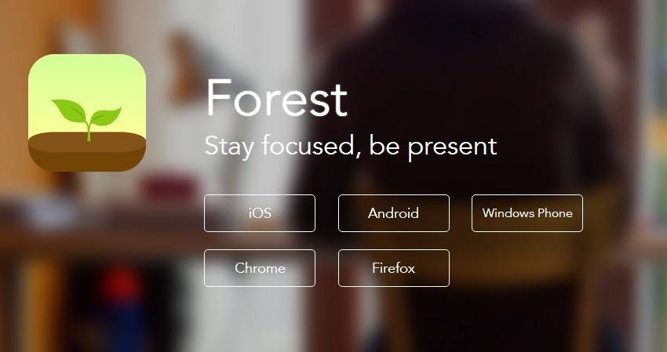
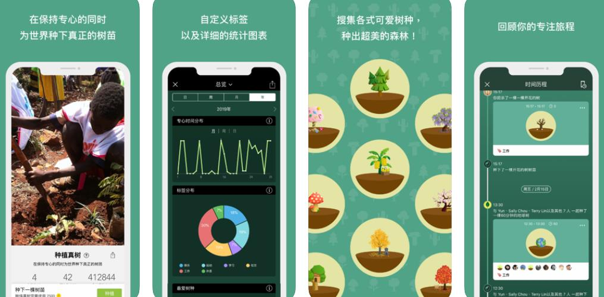

Forest 专注森林是一个帮助用户暂时放下手机，专心于目前工作的效率软件。产品的图主色调为绿色，象征着清新宁静以及环保。本篇是关于App Store上效率付费榜上排名第一的Forest 专注森林的一份产品报告分析。

随着移动互联网的时代发展，手机发展迅速，功能也越来越强大，所能接受的信息量也复杂多样性，各行各业的信息资料都可以通过App获取到，大量优秀的App丰富了我们的生活方式。
虽然，手机可以使我们的工作娱乐方式简便多彩，但是，同时也导致了我们过于依赖手机，越来越多的人都会出现一种现象——手机成瘾症，只要手机不在身边一刻就会左立不安，而不用手机一整天会觉得与世隔绝，特别没有安全。
细细观察，会发现：我们离不开手机的主要原因是接受外界的信息，拥有一部手机可以让我们随时随地的获取信息，时不时会打开手机看看有无人发信息给自己，或者看看最新的新闻八卦消息，生怕不能及时的回复。

然而，对于消息的回复，正常下并非要及时，很多时候都是聊天性的消息，而新闻八卦这类的信息，也可以不用马上知道，反正也可以从各类App的历史消息中查看得到，真正造成我们对手机如此频繁的打开的原因是自身的意志力不坚定，总会被心里的“是不是有人找我”、“是不是有什么大新闻我没看到”这些念头所控制。
所以，有没有一种产品既可以强制自己专心眼前事务，又可以不漏掉比较急的消息的功能呢？
因此，为了迎合用户的需求，市面上出现了一种个人效率类的产品，而Forest 专注森林便是其中较为出色的产品，它通过设定一定时间内的任务——种树，来强制用户暂时离开手机，从而获得一些奖励，很好解决了普遍用户的需求。